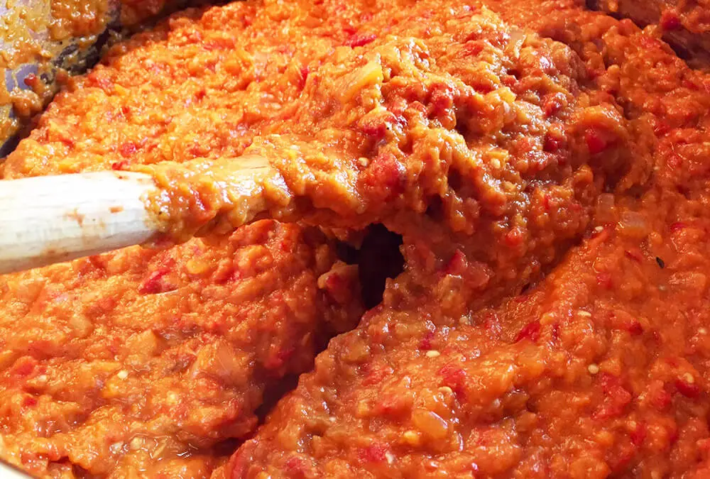

Retete delicioase cu zacusca
Zacusca noastră nu este doar un aperitiv delicios, ci și un ingredient versatil pentru multe rețete savuroase. Iată câteva idei pentru a o include în mesele tale:
-
Sandwich cu zacuscă și brânză
Ingrediente:
- 2 felii de pâine prăjită
- 2 linguri de zacuscă
- Brânză topită sau brânză de capră
Preparare:
Întinde zacusca pe feliile de pâine prăjită, adaugă brânza și lasă-le la cuptor pentru 5 minute. Perfect pentru un prânz rapid sau o gustare!
-
Salată cu zacuscă și ouă fierte
Ingrediente:
- 2 ouă fierte
- 2 linguri de zacuscă
- Frunze de salată verde
- Roșii
Preparare:
Amestecă salata cu roșiile și adaugă ouăle fierte tăiate. La final, pune zacusca ca dressing pentru un gust inconfundabil.
-
Paste cu zacuscă
Ingrediente:
- 200g paste
- 3 linguri de zacuscă
- 2 linguri de ulei de măsline
- Busuioc proaspăt
Preparare:
Gătește pastele, adaugă zacusca și uleiul de măsline, apoi amestecă-le. Servește cu busuioc proaspăt pentru un prânz rapid și gustos.
-
Pizza cu zacuscă
Ingrediente:
- 1 blat de pizza
- 4 linguri de zacuscă
- Brânză rasă (mozzarella, parmezan)
- Salam sau legume (opțional)
Preparare:
Înlocuiește sosul de pizza cu zacuscă, adaugă brânza și toppingurile preferate (salam sau legume). Coace la cuptor până devine crocantă și delicioasă.
-
Tosturi cu zacuscă și brânză de capră
Ingrediente:
- 2 felii de pâine
- 2 linguri de zacuscă
- Brânză de capră
- Un strop de ulei de măslinet
Preparare:
Întinde zacusca pe pâine și adaugă felii de brânză de capră. Prăjește-le într-o tigaie cu un strop de ulei de măsline până devin crocante. Servește-le ca gustare sau mic dejun.
Meniu

Reteța nouă de zacuscă a apărut!

Facem zacuscă la ceaun!
Companie
Karina Cîmpian
KKK